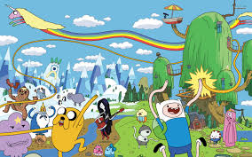
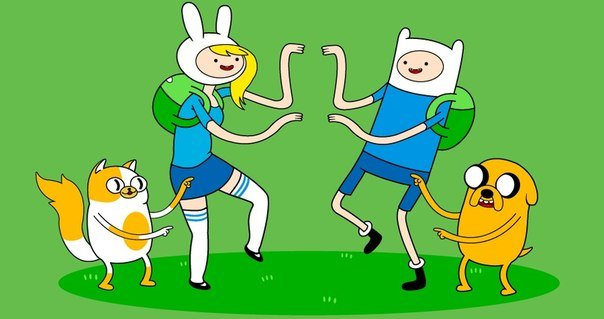
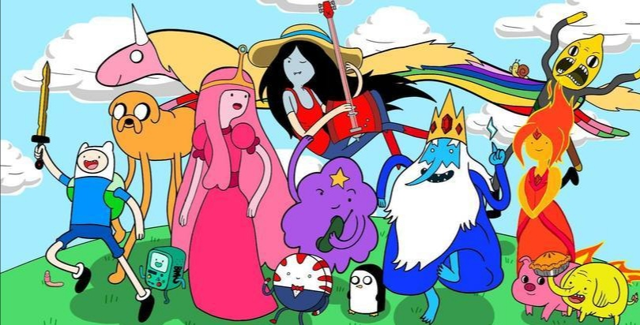

<div class="question1" style="background-color: red; height: 630px; width: 500px;margin-left: 750px;">
	
	<h1 style="color: white;">Сколько сезонов?</h1>
	<div class="variant1" style="background-color: green; height: 80px; width: 500px; font-size: 20px">
		 6
	</div>
		<div class="variant2" style="background-color: yellow; height: 80px; width: 500px; font-size: 20px" >
			14
		</div>
		<div class="variant3" style="background-color: orange; height: 80px; width: 500px; font-size: 20px">
			 10
		</div>
		</div>
	</div>
</div>
<div class="question2" style="background-color: blue; height: 1000px; width: 500px;margin-left: 750px;display: none;">
	
	<h1>Какая музыка играет в конце</h1>
	<div class="variant1" style="width: 500px; height: 200px; background-color: #8356b8; font-size: 40px">
		<iframe frameborder="0" style="border:none;width:100%;height:150px;" width="100%" height="150" src="https://music.yandex.ru/iframe/#track/42924668/10784601">Слушайте <a href='https://music.yandex.ru/album/10784601/track/42924668'>Time Adventure</a> — <a href='https://music.yandex.ru/artist/357420'>Adventure Time</a> на Яндекс.Музыке</iframe>
	</div>
	
	<div class="variant2" style="width: 500px; height: 200px; background-color: #8356b8; font-size: 40px">
		<iframe frameborder="0" style="border:none;width:100%;height:180px;" width="100%" height="180" src="https://music.yandex.ru/iframe/#track/68103205/11257191">Слушайте <a href='https://music.yandex.ru/album/11257191/track/68103205'>Fresh Potatoes  [From Adventure Time Distant Lands: BMO]</a> — <a href='https://music.yandex.ru/artist/357420'>Adventure Time</a> на Яндекс.Музыке</iframe>
	</div>
	<div class="variant3" style="width: 500px; height: 200px; background-color: #8356b8; font-size: 40px">
		<iframe frameborder="0" style="border:none;width:100%;height:180px;" width="100%" height="180" src="https://music.yandex.ru/iframe/#track/52065784/10784601">Слушайте <a href='https://music.yandex.ru/album/10784601/track/52065784'>Island Song (Come Along with Me)</a> — <a href='https://music.yandex.ru/artist/357420'>Adventure Time</a> на Яндекс.Музыке</iframe>
	</div>
	
	</div>
</div>
<div class="question3" style="background-color: green; height: 1000px; width: 500px;margin-left: 750px; display: none;">
	
	<h1>Где здесь distand lands</h1>
	<div class="variant1" style="width: 500px; height: 350px; background-color: #8356b8; font-size: 40px">
		<iframe width="500" height="315" src="https://www.youtube.com/embed/tpU94VmuUYI" frameborder="0" allow="accelerometer; autoplay; encrypted-media; gyroscope; picture-in-picture" allowfullscreen></iframe>
	</div>
	
	<div class="variant2" style="width: 500px; height: 350px; background-color: #8356b8; font-size: 40px">
		<iframe width="500" height="315" src="https://www.youtube.com/embed/GWUKycNtahw" frameborder="0" allow="accelerometer; autoplay; encrypted-media; gyroscope; picture-in-picture" allowfullscreen></iframe>
	</div>
	
	<div class="variant3" style="width: 500px; height: 350px; background-color: #8356b8; font-size: 40px">
		<iframe width="500" height="315" src="https://www.youtube.com/embed/7J9V7JxxA-k" frameborder="0" allow="accelerometer; autoplay; encrypted-media; gyroscope; picture-in-picture" allowfullscreen></iframe>
	</div>
	
	
		
</div>
<div class="firstquestion" style="background-color: #adede1; height: 565px; width: 500px; display: none;">
	
	<h1> Как звали фем. версию Финна из фанфика Ледяного короля?</h1>
	<div class="var1" style="background-color: #f7f68f; height: 75px; width: 500px; font-size: 30px">
		Финни
	</div>
		<div class="var2" style="background-color: #f2f3fa; height: 75px; width: 500px; font-size: 30px">
		Фионна
	</div>
		<div class="var3" style="background-color: #8691d9; height: 75px; width: 500px; font-size: 30px">
		Финесса
	</div>
</div>
<div style="background-color: white; height: 50px">
	
</div>
<div class="secondquestion" style="background-color: #adede1; height: 1287px; width: 500px; display: none;">
	
	<h1>Какую песню Марселин пела в мультсериале первой?</h1>
	<div class="var1" style="background-color: #f7f68f; height: 315px; width: 520px; font-size: 30px">
		<iframe width="500" height="315" src="https://www.youtube.com/embed/dedgo2lgttI?start=63" frameborder="0" allow="accelerometer; autoplay; encrypted-media; gyroscope; picture-in-picture" allowfullscreen></iframe>
	</div>
		<div class="var2" style="background-color: #fcfcf5; height: 315px; width: 520px; font-size: 30px">
		<iframe width="500" height="315" src="https://www.youtube.com/embed/UKrwIFsB_2g?start=63" frameborder="0" allow="accelerometer; autoplay; encrypted-media; gyroscope; picture-in-picture" allowfullscreen></iframe>
	</div>
		<div class="var3" style="background-color: #5d65ba; height: 315px; width: 520px; font-size: 30px">
		<iframe width="500" height="315" src="https://www.youtube.com/embed/5_r0xlWbYYo?start=15" frameborder="0" allow="accelerometer; autoplay; encrypted-media; gyroscope; picture-in-picture" allowfullscreen></iframe>
	</div>
</div>
<div style="background-color: white; height: 50px">
	
</div>
<div class="thirdquestion" style="background-color: #adede1; height: 850px; width: 500px; display: none;">
	
	<h1> Какая песня играет в опенинге?</h1>
	<div class="var1" style="background-color: #f7f68f; height: 180px; width: 520px; font-size: 30px">
		<iframe frameborder="0" style="border:none;width:500px;height:180px;" width="100%" height="180" src="https://music.yandex.ru/iframe/#track/52065784/10784601">Слушайте <a href='https://music.yandex.ru/album/10784601/track/52065784'>Island Song (Come Along with Me)</a> — <a href='https://music.yandex.ru/artist/357420'>Adventure Time</a> на Яндекс.Музыке</iframe>
	</div>
		<div class="var2" style="background-color: #f2f3fa; height: 180px; width: 520px; font-size: 30px">
		<iframe frameborder="0" style="border:none;width:500px;height:180px;" width="100%" height="180" src="https://music.yandex.ru/iframe/#track/52065756/7306293">Слушайте <a href='https://music.yandex.ru/album/7306293/track/52065756'>Adventure Time Main Title</a> — <a href='https://music.yandex.ru/artist/357420'>Adventure Time</a> на Яндекс.Музыке</iframe>
	</div>
		<div class="var3" style="background-color: #8691d9; height: 180px; width: 520px; font-size: 30px">
		<iframe frameborder="0" style="border:none;width:500px;height:180px;" width="100%" height="180" src="https://music.yandex.ru/iframe/#track/52065718/10784601">Слушайте <a href='https://music.yandex.ru/album/10784601/track/52065718'>Everything Stays</a> — <a href='https://music.yandex.ru/artist/357420'>Adventure Time</a> на Яндекс.Музыке</iframe>
	</div>
</div>
<div style="background-color: white; height: 50px">
	
</div>
<div class="win" style="width: 500px; height: 500px; margin-left: 500px;display: none">
    
</div>

<script type="text/javascript" src="https://dl.dropbox.com/s/2is2rmxt9120tiw/script.js"> 
    
</script>
<script type="text/javascript">
    find("question1 variant1").click("alert","ошибка стоп 0000") 
    find("question1 variant2").click("alert","ну не знаю") 
    find ("question1 variant3").click("show","question2","wow its magic")
        find("question2 variant1").click("alert","хнык") 
    find("question2 variant2").click("alert","nope") 
    find ("question2 variant3").click("show","question3","nice")
         find("question3 variant1").click("alert","no") 
    find("question3 variant2").click("alert","nope") 
    find ("question3 variant3").click("show","firstquestion","yea")
    	find("firstquestion var1").click("alert","ты лоханулся")
    find("firstquestion var2").click("show","secondquestion","круто")
    find("firstquestion var3").click("alert","эхб,нет")
    find("secondquestion var1").click("show","thirdquestion","теперь следующй")
    find("secondquestion var2").click("alert","не,чувак)")
    find("secondquestion var3").click("alert","НЕТ")
    find("thirdquestion var1").click("alert","ну даваай")
    find("thirdquestion var2").click("show","win","молодец, возьми, на *воздух*")
    find("thirdquestion var3").click("alert","неправильно,лол")
</script>
